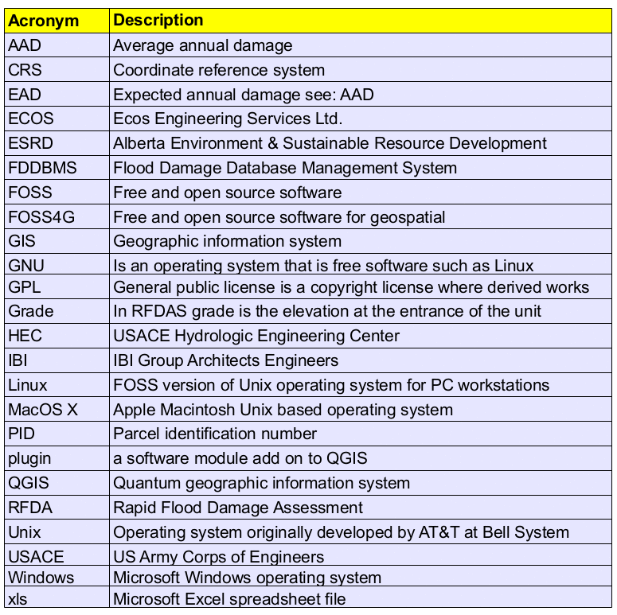
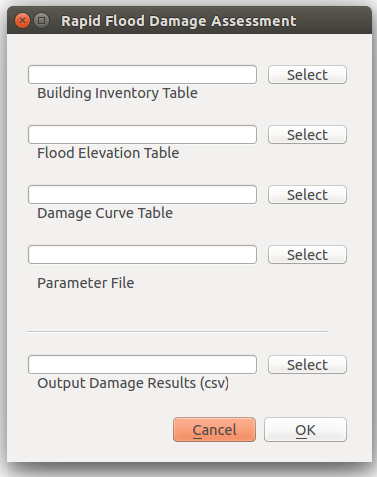
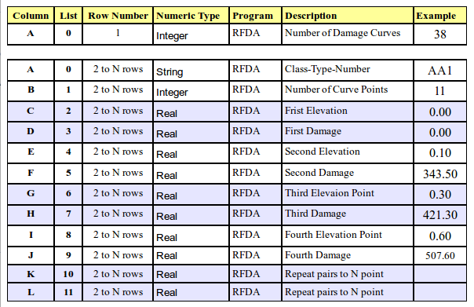
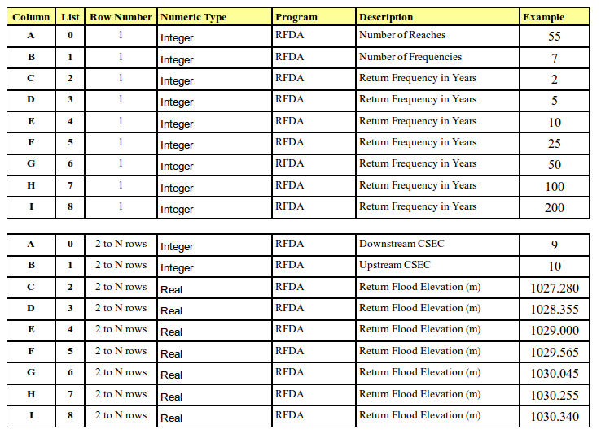

RFDA - User Manual
The best practice for flood mitigation project benefit-cost analysis uses the probabilistic approach based on projected future events. Flood damages in a community is estimated by calculating damages from a series of return floods. The flood depths are computed from hydrologic and hydraulic models. When these are applied to depth-damage curves, the flood damages can be estimated for the flood event. The average annual expected damage (AAD/EAD) can be estimated as the area under the damage-frequency curve.
IBI Group and Ecos Engineering (IBI/ECOS) developed a computerized flood damage assessment system for Alberta Environment in the early 1980s. This system included a computerized database inventory of residential and commercial units within the flood risk areas. It was developed using a CPM micro computer and BASIC program. The system and process developed was ahead of its time. It was the first computerized flood damage assessment system that computed flood damages to each building structure in the floodplain. This system was subsequently ported to the IBM-PC and MS-DOS using the PC File application.
In 1982 the flood damage database management system, or FDDBMS, was used in Alberta and subsequently was also used for flood damage assessment in the Province of Saskatchewan, under a flood damage reduction program undertaken by Saskatchewan Environment. It was then modified for use in the province of Manitoba under a project entitled “Development of Depth-Damage Curves for Residential and Farm Structures in Southern Manitoba”, under the Canada-Manitoba Flood Damage Reduction Program for Canada’s Inland Waters Directorate.
As a result of the 2013 flood in southern Alberta, Environment and Sustainable Resources Development (ESRD) provided support to update FDDBMS, from a legacy DOS based system, to a graphically based open source system that can integrate spatial GIS data with the database attributes. The new system is called the Rapid Flood Damage Assessment (RFDA) model. The following user manual will describe the key aspects on how to use this application.
1. GENERAL INFORMATION
1.1. System Overview
RFDA is designed to be as easy as possible to use for flood damage assessment. It takes an open data approach giving users ready access to the input and output data. Instead of making users install, learn, and operate a complex relational database system, RFDA input files are stored in standard xls spreadsheet format. RFDA output are in ascii csv format which can readily be imported into Excel or LibreOffice Calc for additional processing and formatting.
To simplify installation and maintenance, RFDA is developed as a Quantum GIS (QGIS) plugin. QGIS is a FOSS4G (Free and Open Source Software for Geospatial) application that can run on multiple operating systems. This means that RFDA can be installed on Windows, MacOS X or Linux computers by users.
RFDA is developed using Python. Python is a programming language that lets you work quickly and integrate systems more effectively. Python supports functional or procedural and object based approaches to software development. It is also supported by many open source applications such as QGIS. RFDA is currently under development (alpha release).
RFDA is a QGIS plugin module that requires QGIS version 2.x to be installed. QGIS is a GIS application that allows you to create, edit, visualize, analyse and publish geospatial information on Windows, MacOS X, Linux, and soon Android.
1.2. Copyright
Copyright (c) 2015 GWN Technologies International a division of Ecosoft Systems Inc.
Permission is granted to copy, distribute and/or modify this document under the terms of the GNU Free Documentation License, Version 1.2 or any later version published by the Free Software Foundation; with no Invariant Sections, no Front-Cover Texts, and no Back-Cover Texts.
A copy of the license is included in the section GNU Free Documentation License.
The above copyright notice excludes the QGIS User Manual which may be appended to this document. Consult the QGIS Manuals for further copyright and licensing information.
Click on the link below to access a full listing of the license.
1.3. Organization of the Manual
Up-to-date Documentation
The latest version of this document can always be found in the documentation area of the |qg| website at http://www.qgis.org/en/docs/.
1.4. Acronyms and Abbreviations

2. SYSTEM INSTALLATION
RFDA is developed as a Quantum GIS plugin, consequently the user is required to install QGIS on the system. QGIS is a FOSS4G application that will run on Windows, Linux and MacOS X. QGIS can be downloaded from: http://qgis.org/en/site/. Documentation and installation instructions are available from the site.
The RFDA plugin is available from GWN Technologies International by forwarding a request to: support@gwnsys.ca
2.1. Installing QGIS
The latest version of QGIS can be downloaded from: https://www.qgis.org/en/site/forusers/download.html.
QGIS is available on Windows, MacOS X, Linux and Android. Binary packages (installers) for current stable version can be downloaded and installed from the website listed. Install QGIS version 2.x as per instructions from the website.
2.2. Installing RFDA Plugin
The RFDA plugin is supplied as a zip file. Unzip and copy the RFDA folder to the plugin folder for QGIS. The user should refer to the QGIS website to determine the folder location which is dependant on the user’s operating system.
For Windows users it is probably under C:\Users\Username\.qgis2\python\plugins.
For Linux (Ubuntu) it is under \Home\.qgis2\python\plugins.
Copy the RFDA folder into your QGIS plugin folder.
2.3. Running RFDA Plugin
The RFDA plugin requires three files in Microsoft Excel spreadsheet format (xls) input data files and one ascii text based parameter file. The first is a residential or commercial inventory, the second is the flood table with reach, return flood and flood elevations, and the third is the flood damage curves.

2.3.1. Residential-Commercial Inventory
The residential or commercial inventory table is a database of the buildings in the flood prone area. It is recommended that the inventory include all the structures that would be flooded by the highest flood elevation in the reach plus a buffer to take into account basement flooding.
2.3.2. Flood Table Inventory
The flood table is a list of all the reaches and the flood elevations for the different return floods on the reach.
2.3.3. Damage Curve Table
The damage curve table lists the depth-damage estimates for contents and structure for various residential classes and types. Commercial damage curves lists contents for different commercial, retail and institutional categories and structural damages by construction type. Damage curves are listed as damage estimated per square metre.
2.3.4. Damage Estimate Output Data
The calculated flood damages are listed for each return flood with PID, roll or assessment number as the key field and damages for main floor contents and structure and basement contents and structure. For commercial and multi-walkup and apartment buildings the basement contents and structures are replaced with underground parkage damage estimate if it is included.
2.3.5. RFDA Parameter File
The RFDA parameter files is a text file that lists the header field for the return floods, the column of the area field (assessed or building footprint from GIS), floor height, parkade damage per square metre, logical setting for sewer backup and logical for residential or commercial.
3. SYSTEM SUMMARY
RFDA was designed as a QGIS plugin for two reasons. The first was because QGIS provides a solid platform framework for RFDA which could be installed on multiple operating platforms like Microsoft Windows, Linux and Mac OS X, and secondly QGIS provides the user with a professional set of GIS tools that is needed for processing the input data and for analysis of the results after.
QGIS is an Open Source Geographic Information System. The project was born in May of 2002 and was established as a project on SourceForge in June of the same year. The QGIS team has worked hard to make GIS software (which is traditionally expensive proprietary software) a viable prospect for anyone with basic access to a personal computer. QGIS is developed using the Qt toolkit (http://qt.digia.com) and C++. This means that QGIS feels snappy and has a pleasing, easy-to-use graphical userinterface (GUI).
QGIS aims to be a user-friendly GIS, providing common functions and features. The initial goal of the project was to provide a GIS data viewer. QGIS has reached the point in its evolution where it is being used by many for their daily GIS data-viewing needs. QGIS supports a number of raster and vector data formats, with new format support easily added using the plugin architecture.
QGIS is released under the GNU General Public License (GPL). Developing QGIS under this license means that you can inspect and modify the source code, and guarantees that you, our happy user, will always have access to a GIS program that is free of cost and can be freely modified. You should have received a full copy of the license with your copy of QGIS, and you also can find it in Appendix GNU General Public License.
3.1. System Configuration
The RFDA plugin model is designed to help users undertake rapid flood damage assessment on a PC workstation running entirely on open source technologies. For example a user can install Ubuntu (Linux) operating system with LibreOffice Calc, Quantum GIS, and the RFDA plugin which are all FOSS and FOSS4G applications. Alternatively proprietary operating systems like Windows 8.1 and Macintosh OS X are also supported. However this user manual only describes how it works with Linux and Windows workstations.
3.2. RFDA Input Data
The following sub-sections describes the input data in xls format that is required for use in RFDA.
3.2.1. Residential Inventory
The residential inventory data is assembled into an xls spreadsheet by a data wrangler who munges the data from a number of sources including spatial data from a GIS coverage, assessment and other municipal records and databases. The key or core data includes a parcel identification (PID) or assessment roll number as a key field. Other data include building centroid and footprint area. The building centroid is the spatial key in the local municipality’s GIS coordinate reference system (CRS), so that its location in the floodplain is consistently depicted in relation to the HEC hydraulic model. Building class and type, together with grade and height to main floor are also required as input. Based on its coordinates the reach information can be added to the inventory. The first 26 columns are used of which 11 are required. Additionally there are three scale factor constants which allows the user to increase or decrease total damage estimated and content and structural damages.

Click on the link below to see the xls example of residential inventory data.
Note: Residential inventory example has been modified for demonstration purposes only.3.2.2. Commercial Inventory
The commercial inventory has the same fields as the residential inventory however the logical in the Basement field is set to Yes if there is underground parking and No if there is none.
3.2.3. Damage Curves
Similarly flood damage curves for residential and commercial are combined into one table. Class and Type values are unique for each category. Note first row is the setup header, second to last are the content and structure damage curves.

3.2.4. Flood Table
The flood table is extracted from the USACE HEC-RAS model output. The HEC cross-sections are plotted as a layer coverage spatially in GIS. Reaches comprising of two or more sections are selected and the average flood elevation, based on the start and end sections for the reach, is entered into the flood table. The reach information is also added to the flood table.

3.2.5. Parameter File
The parameter file is an ascii comma-separated values (csv) file that users input the headers for the return floods, the inventory spreadsheet column for the area value to be used, height between floor levels in metres, value for parkade flooding per square metre, logical for sewer backup and logical for commercial inventory.
Sample parameter file. Note no space after the commas:
2 Year Flood,10 Year Flood,20 Year Flood,50 Year Flood,100 Year Flood,500 Year Flood,13,2.7,215,NoSewer,NoCommercialAppendix A: FDDBMS
Appendix B: Inventory Process
Inventory Process
Tutorial on the munging of residential and commercial inventory data to come.
Appendix C: License
GNU General Public License
Bibliography
In addition to the list below it is recommended that the user also investigate other reference material with respect to QGIS, and Python if there is interest to contribute to the development.
-
[acres] Acres Limited. (1968). "Guidelines for Analysis, Volume II Flood Damages", Government of Canada and Ontario Joint Task Force on Water Conservation Projects in Southern Ontario.
-
[ECOS] ECOS Engineering Services Ltd., Flood Damage Database Management System, User’s Guide, Version 3.0, March 1983.
-
[IBI-ECOS] IBI Group and ECOS Engineering Services Ltd., Phase IIB, Flood Damage Estimates, Fort McMurray Flood Damage Reduction Program, Technical Report, Alberta Environment and the City of Fort McMurray, Fort McMurray 1982.
-
[QGIS] QGIS Development Team, 2015. QGIS Geographic Information System. Open Source Geospatial Foundation Project. http://qgis.osgeo.org.
-
[shawcross-ribeiro] Shawcross, S.W., and Ribeiro, A.R.V., "The development of residential stage-damage curves for application in Western Canada", (Flood Hazard Management in Government and the Private Sector, Proceedings of the Ninth Annual Conference of State Floodplain Managers, 100-105, 1985.
-
[sherman] Sherman, G., "The PyQGIS Programmer’s Guide", Extending QGIS 2.x with Python, Locate Press LLC, 2014.